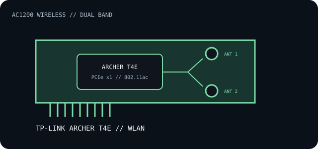

[ INDIVIDUAL COMPONENT // EXPANSION CARDS ]
TP-Link Archer T4E
AC1200 dual-band Wireless-AC adapter for desktop PCI Express hosts, with two external antennas.

IDENTIFICATION: Archer T4E hardware revisions can use different driver packages. Read the version printed on the board/label before downloading software; the marketing model alone is not a chipset identifier.
Specifications and compatibility
| Exact model | TP-Link Archer T4E AC1200 Wireless Dual Band PCI Express Adapter. |
|---|---|
| Controller / radio | The product is specified by TP-Link as an 802.11ac adapter; controller silicon is revision-dependent and should be confirmed from the board's PCI ID. |
| Bus / host interface | PCI Express x1. |
| Wireless standards / rates | 5 GHz 802.11ac/a/n up to 867 Mb/s; 2.4 GHz 802.11n/g/b up to 300 Mb/s. Real throughput depends on the access point, channel width, antenna placement and interference. |
| Ports / connectors | Two external antennas on the card's antenna terminals; no Ethernet jack or Bluetooth function is specified. |
| OS / driver compatibility | TP-Link's available driver matrix includes Windows generations for this product, but support differs by hardware version and release. Check the exact revision's download page before installing on Windows 10/11 or an older OS. |
| Revision / host caveat | Verify bracket height, card clearance, revision label and driver signature. A PCIe connector fits multiple lane widths, but slot position and host resource sharing remain platform-specific. |
Installation and archival notes
- Connect both antennas and locate them away from metal obstructions for reliable dual-band service.
- Keep the hardware version and installed driver version with the record; don't use another Archer model's package based only on a similar chipset family.
- Check that the host OS is listed for this exact revision before relying on the adapter for system access.
Manufacturer specifications and documentation
- TP-Link — Archer T4E product overviewAC1200 dual-band link ratings, antennas and product features.
- TP-Link — Archer T4E downloads and manualsRevision-specific user guide and operating-system driver packages.
- IEEE 802.11 Working GroupWireless LAN standards family reference.